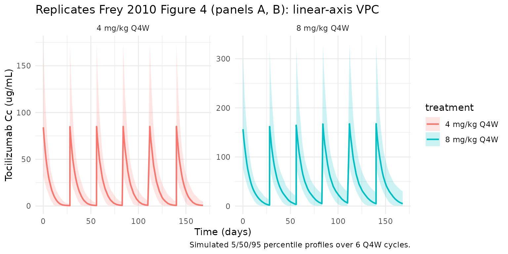
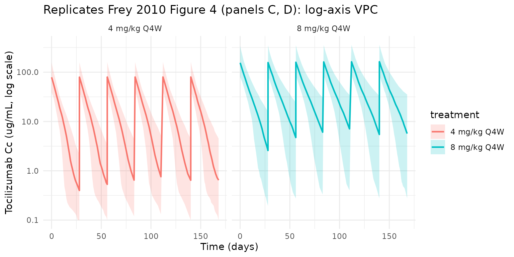

Frey_2010_tocilizumab
Source:vignettes/articles/Frey_2010_tocilizumab.Rmd
Frey_2010_tocilizumab.RmdModel and source
- Citation: Frey N, Grange S, Woodworth T. Population pharmacokinetic analysis of tocilizumab in patients with rheumatoid arthritis. J Clin Pharmacol. 2010;50(7):754-766. doi:10.1177/0091270009350623
- Description: Two-compartment population PK model for tocilizumab in adults with moderate-to-severe rheumatoid arthritis (Frey 2010), with parallel first-order linear and Michaelis-Menten elimination from the central compartment.
- Article: J Clin Pharmacol. 2010;50(7):754-766
Population
Frey 2010 pooled data from four phase III studies — OPTION (N = 396), TOWARD (N = 718), RADIATE (N = 341), and AMBITION (N = 338) — into a final population PK dataset of 1793 adults with moderate-to-severe rheumatoid arthritis (RA). The dataset contained 7415 serum tocilizumab concentrations after 4 or 8 mg/kg one-hour intravenous infusions every 4 weeks for 24 weeks (Frey 2010 Methods, p754; Results, p757). The four trials together cover patients with inadequate response to methotrexate (OPTION), inadequate response to traditional DMARDs (TOWARD), inadequate response to anti-TNF therapy (RADIATE), and tocilizumab monotherapy (AMBITION).
Baseline demographics (Frey 2010 Table I, p758): median age 52-54 years (range 18-89), 81-84% female, median body weight 67-73 kg (range 38-150), median BSA 1.7-1.8 m^2, median serum albumin 38-39 g/L (range 24-50), median creatinine clearance 104-113 mL/min, median total serum protein 73-75 g/L, median HDL cholesterol 54 mg/dL, median rheumatoid factor 92-117 U/mL (range 15-11800), 78-84% non-smokers. Race composition is 72-90% White / 9-13% Asian (highest in OPTION) / 0-5% Black / 2-10% American Indian or Alaskan Native / 2-5% Other across the four trials.
The same information is available programmatically via
readModelDb("Frey_2010_tocilizumab")$population.
Source trace
Every structural parameter, covariate effect, IIV element, and residual-error term below is taken from Frey 2010 Tables II and III. The reference covariate values are: BSA = 1.8 m^2, male sex, HDL-C = 54 mg/dL, log(RF) = 4.7 (equivalently RF ~110 U/mL), total protein = 74 g/L, albumin = 38 g/L, creatinine clearance = 106 mL/min, and non-smoker.
| Equation / parameter | Value | Source location |
|---|---|---|
lcl (CL) |
log(0.3) L/day |
Table II, “CL, L/d” row |
lvc (V1) |
log(3.5) L |
Table II, “V1, L” row |
lq (Q) |
log(0.2) L/day |
Table II, “Q, L/d” row |
lvp (V2) |
log(2.9) L |
Table II, “V2, L” row |
lvmax (Vmax) |
log(7.5) mg/day |
Table II, “VM, mg/d” row |
lkm (Km) |
log(2.7) ug/mL |
Table II, “KM, ug/mL” row |
e_bsa_cl (BSA/1.8 exponent on CL) |
0.7 |
Table II “BSA on CL” / Table III equation |
e_sexf_cl (female fractional change on CL) |
-0.16 |
Table II “Sex (female, %) on CL” = -16% |
e_hdlc_cl (HDLC/54 exponent on CL) |
-0.2 |
Table II “HDL-C on CL” / Table III equation |
e_lrf_cl (log(RF)/log(110) exponent on CL) |
0.1 |
Table II “Logarithm of RF on CL” / Table III |
e_tpro_vc (TPRO/74 exponent on Vc) |
-1.1 |
Table II “Total protein on V1” / Table III |
e_alb_vc (ALB/38 exponent on Vc) |
0.7 |
Table II “Albumin on V1” / Table III |
e_alb_vmax (ALB/38 exponent on Vmax) |
-0.4 |
Table II “Albumin on VM” / Table III |
e_crcl_vmax (CRCL/106 exponent on Vmax) |
0.2 |
Table II “Creatinine CL on VM” / Table III |
e_smk_vmax (smoker fractional change on Vmax) |
0.11 |
Table II “Smoking on VM” = +11% |
var(etalcl) |
log(1 + 0.39^2) = 0.1416 |
Table II IIV section: CL CV 39% |
var(etalvc) |
log(1 + 0.37^2) = 0.1284 |
Table II: V1 CV 37% |
var(etalvp) |
log(1 + 0.66^2) = 0.3614 |
Table II: V2 CV 66% |
var(etalvmax) |
log(1 + 0.54^2) = 0.2562 |
Table II: Vm CV 54% |
cor(etalcl, etalvc) |
0.6 |
Table II “COV(eta_CL : eta_V1), r” |
cor(etalcl, etalvp) |
-0.1 |
Table II “COV(eta_CL : eta_V2), r” |
cor(etalcl, etalvmax) |
-0.5 |
Table II “COV(eta_CL : eta_VM), r” |
cor(etalvc, etalvp) |
0.5 |
Table II “COV(eta_V1 : eta_V2), r” |
cor(etalvc, etalvmax) |
0.2 |
Table II “COV(eta_V1 : eta_VM), r” |
cor(etalvp, etalvmax) |
0.2 |
Table II “COV(eta_V2 : eta_VM), r” |
propSd |
0.22 |
Table II “Proportional” residual row, 22% (see Errata) |
addSd |
2.4 ug/mL |
Table II “Additive” residual row, 2.4 ug/mL (see Errata) |
| Structure (2-cmt + parallel linear + MM elimination from central) | n/a | Methods p756-757; Results p757-759; Figure 5 |
Parameterization notes
-
Two-compartment IV with parallel linear and Michaelis-Menten
elimination. Frey 2010 fits a 2-compartment model with
first-order linear clearance
CL(L/day) and saturable Michaelis-Menten elimination withVm(mg/day) andKm(ug/mL) acting on the central compartment. There is no depot compartment because tocilizumab is administered as a 1-hour IV infusion; in the model file the dose enters thecentralcompartment directly. -
CV% to log-normal variance. Frey 2010 Table II
reports between-subject variability as CV% on the linear-parameter scale
and the off-diagonal correlations between etas as Pearson r. The
conversion
omega^2 = log(1 + CV^2)gives the log-normal variance; off-diagonal covariances are computed asr_ij * sqrt(omega_i^2 * omega_j^2). -
Log-RF covariate. Frey 2010 fits the
rheumatoid-factor effect on the natural-log scale using a power-of-ratio
form
(LRF / 4.7)^0.1whereLRF = log(RF). The canonical columnRHEUMATOID_FACTORcarries the raw RF in U/mL; the model equation applies the log transform internally as(log(RHEUMATOID_FACTOR) / log(110))^e_lrf_cl, which is algebraically identical to the paper’s form becauselog(110) ~= 4.7. -
CRCL units. Frey 2010 uses raw creatinine clearance
in mL/min (the paper’s Table III equation
VM = 7.5 * (CRCL/106)^0.2), with reference 106 mL/min. The canonicalCRCLcolumn is normally documented as BSA-normalized (mL/min/1.73 m^2); for Frey 2010 the column carries the raw CrCl in mL/min and BSA enters the model separately on linear CL. The per-modelcovariateData[[CRCL]]$notesdocuments this deviation.
Errata
The published Table II (Frey 2010 p759) lists the residual-error standard deviations with swapped Greek-letter subscripts:
| Table II row label | Reported in column “Estimate” |
|---|---|
Additive (sigma_prop), ug/mL |
2.4 |
Proportional (sigma_add), % |
22 |
The row labels and units (additive 2.4 ug/mL; proportional 22%) are
correct and unambiguous. The parenthetical Greek subscripts
sigma_prop / sigma_add are interchanged
relative to the residual-error equation in the Methods (p756), where
eps1 is the proportional error (variance
sigma^2_prop) and eps2 is the additive error
(variance sigma^2_add). The model file uses the values in
the unambiguous rows: propSd = 0.22 and
addSd = 2.4 ug/mL.
A second, smaller notational issue: Frey 2010 Figure 1 (p760) labels
its y-axis panels for Vm as VM (mg/h), while Table II and
the Results narrative report VM = 7.5 mg/d. The model file
uses the per-day value (mg/day), consistent with the table and the text.
This may be a figure-axis-label slip rather than a value error.
Virtual cohort
The simulations below use a virtual cohort whose covariate distributions approximate the Frey 2010 Table I demographics. No subject-level observed data were released with the paper.
set.seed(20260428)
# Cohort size: 200 subjects per dose arm gives stable 5/50/95 percentile
# bands for the Figure 4 / Figure 3 reproduction and the PKNCA distribution
# summaries.
n_subj <- 200
clamp <- function(x, lo, hi) pmin(pmax(x, lo), hi)
cohort <- tibble::tibble(
id = seq_len(n_subj),
WT = clamp(rnorm(n_subj, mean = 70, sd = 17), 38, 150),
BSA = clamp(rnorm(n_subj, mean = 1.8, sd = 0.22), 1.3, 2.7),
SEXF = rbinom(n_subj, 1, 0.82),
HDLC = clamp(rnorm(n_subj, mean = 54, sd = 14), 23, 135),
RHEUMATOID_FACTOR = pmax(rlnorm(n_subj, log(110), 0.9), 15),
TPRO = clamp(rnorm(n_subj, mean = 74, sd = 5), 57, 96),
ALB = clamp(rnorm(n_subj, mean = 38, sd = 4), 24, 50),
CRCL = clamp(rnorm(n_subj, mean = 106, sd = 35), 27, 317),
SMOKE = rbinom(n_subj, 1, 0.18)
)Two regimens are simulated in parallel: 4 mg/kg and 8 mg/kg one-hour IV infusions every 4 weeks (Q4W). Six Q4W doses (168 days, ~8 elimination half-lives in the linear range; reference t1/2 ~21 days per Frey 2010 Discussion p762) place the final cycle safely at steady state.
tau <- 28 # Q4W dosing interval (days)
inf_dur <- 1 / 24 # 1-hour IV infusion duration (days)
n_doses <- 6
dose_days <- seq(0, tau * (n_doses - 1), by = tau)
build_events <- function(cohort, dose_mgkg, treatment) {
ev_dose <- cohort |>
tidyr::crossing(time = dose_days) |>
dplyr::mutate(amt = dose_mgkg * WT, # mg/kg * kg = mg
cmt = "central",
evid = 1L,
dur = inf_dur,
treatment = treatment)
ss_start <- tau * (n_doses - 1)
ss_end <- ss_start + tau
obs_days <- sort(unique(c(
seq(0, 56, by = 1), # daily over the first 2 cycles
seq(56, ss_start, by = 3), # every 3 days through the build-up
seq(ss_start, ss_end, by = 0.5), # half-day grid for the SS cycle / NCA
dose_days + inf_dur, # peak-near-end-of-infusion
dose_days + 1, dose_days + 7, dose_days + 14
)))
ev_obs <- cohort |>
tidyr::crossing(time = obs_days) |>
dplyr::mutate(amt = 0, cmt = NA_character_, evid = 0L,
dur = NA_real_, treatment = treatment)
dplyr::bind_rows(ev_dose, ev_obs) |>
dplyr::arrange(id, time, dplyr::desc(evid)) |>
dplyr::select(id, time, amt, cmt, evid, dur, treatment,
WT, BSA, SEXF, HDLC, RHEUMATOID_FACTOR,
TPRO, ALB, CRCL, SMOKE)
}
events <- dplyr::bind_rows(
build_events(cohort, 4, "4 mg/kg Q4W"),
build_events(cohort |> dplyr::mutate(id = id + n_subj), 8, "8 mg/kg Q4W")
)
stopifnot(!anyDuplicated(unique(events[, c("id", "time", "evid")])))Simulation
mod <- rxode2::rxode2(readModelDb("Frey_2010_tocilizumab"))
conc_unit <- mod$units[["concentration"]]
keep_cols <- c("WT", "BSA", "SEXF", "HDLC", "RHEUMATOID_FACTOR",
"TPRO", "ALB", "CRCL", "SMOKE", "treatment")
sim <- lapply(split(events, events$treatment), function(ev) {
out <- rxode2::rxSolve(mod, events = ev, keep = keep_cols)
as.data.frame(out)
}) |> dplyr::bind_rows()Replicate published figures
Figure 4 — concentration-time profile by dose
Frey 2010 Figure 4 (p762) shows mean and 5th/95th-percentile simulated tocilizumab serum concentrations over 24 weeks of treatment, separately for 4 mg/kg Q4W (panels A and C) and 8 mg/kg Q4W (panels B and D); panels A/B use a linear y-axis and C/D a log y-axis. The block below replicates the linear-scale panels A and B.
vpc <- sim |>
dplyr::filter(!is.na(Cc), time > 0, time <= tau * n_doses) |>
dplyr::group_by(treatment, time) |>
dplyr::summarise(
Q05 = quantile(Cc, 0.05, na.rm = TRUE),
Q50 = quantile(Cc, 0.50, na.rm = TRUE),
Q95 = quantile(Cc, 0.95, na.rm = TRUE),
.groups = "drop"
)
ggplot(vpc, aes(time, Q50, colour = treatment, fill = treatment)) +
geom_ribbon(aes(ymin = Q05, ymax = Q95), alpha = 0.2, colour = NA) +
geom_line(linewidth = 0.8) +
facet_wrap(~treatment, scales = "free_y") +
labs(
x = "Time (days)",
y = paste0("Tocilizumab Cc (", conc_unit, ")"),
title = "Replicates Frey 2010 Figure 4 (panels A, B): linear-axis VPC",
caption = "Simulated 5/50/95 percentile profiles over 6 Q4W cycles."
) +
theme_minimal()
The same simulation on a log y-axis reproduces the dynamic range shown in Frey 2010 Figure 4 panels C and D, where the 4 mg/kg trough drops well below the 8 mg/kg trough because the nonlinear (Vm/Km) clearance pathway saturates less completely at the lower dose.
ggplot(vpc, aes(time, Q50, colour = treatment, fill = treatment)) +
geom_ribbon(aes(ymin = pmax(Q05, 0.1), ymax = Q95),
alpha = 0.2, colour = NA) +
geom_line(linewidth = 0.8) +
facet_wrap(~treatment) +
scale_y_log10() +
labs(
x = "Time (days)",
y = paste0("Tocilizumab Cc (", conc_unit, ", log scale)"),
title = "Replicates Frey 2010 Figure 4 (panels C, D): log-axis VPC"
) +
theme_minimal()
PKNCA validation
Non-compartmental analysis of the final (steady-state) Q4W dosing interval gives Cmax, Cmin (Ctrough), and AUC0-tau per simulated subject and dose group. The per-subject results are then summarised as a mean +/- SD, which is the format reported in Frey 2010 Table IV.
ss_start <- tau * (n_doses - 1)
ss_end <- ss_start + tau
nca_conc <- sim |>
dplyr::filter(time >= ss_start, time <= ss_end, !is.na(Cc)) |>
dplyr::mutate(time_nom = time - ss_start) |>
dplyr::select(id, time = time_nom, Cc, treatment)
# One representative dose per subject per arm at the start of the SS cycle.
nca_dose <- events |>
dplyr::filter(evid == 1, time == ss_start) |>
dplyr::mutate(time = 0) |>
dplyr::select(id, time, amt, treatment)
conc_obj <- PKNCA::PKNCAconc(nca_conc, Cc ~ time | treatment + id)
dose_obj <- PKNCA::PKNCAdose(nca_dose, amt ~ time | treatment + id)
intervals <- data.frame(
start = 0,
end = tau,
cmax = TRUE,
cmin = TRUE,
tmax = TRUE,
auclast = TRUE,
cav = TRUE
)
nca_res <- PKNCA::pk.nca(PKNCA::PKNCAdata(conc_obj, dose_obj, intervals = intervals))
#> ■■■■■■■■■■■■■■■■■■■■■■■■■■■■■■ 96% | ETA: 0s
summary(nca_res)
#> start end treatment N auclast cmax cmin
#> 0 28 4 mg/kg Q4W 200 477 [55.7] 82.2 [53.0] 0.672 [180]
#> 0 28 8 mg/kg Q4W 200 1240 [49.1] 165 [46.9] 3.95 [240]
#> tmax cav
#> 0.0417 [0.0417, 0.0417] 17.0 [55.7]
#> 0.0417 [0.0417, 0.0417] 44.2 [49.1]
#>
#> Caption: auclast, cmax, cmin, cav: geometric mean and geometric coefficient of variation; tmax: median and range; N: number of subjectsComparison against Frey 2010 Table IV
Table IV of Frey 2010 (p762) reports simulated steady-state mean (SD) AUC, Cmax, and Cmin after 48 weeks of treatment. The values below are the mean per-subject NCA results from this vignette’s 6-cycle simulation; because accumulation is small at Q4W dosing (~1.1-1.2x for AUC and Cmax, ~2x for Cmin per Table IV) the 6-cycle vs 12-cycle comparison is dominated by the within-cycle PK rather than residual accumulation.
nca_long <- as.data.frame(nca_res$result)
per_subj <- nca_long |>
dplyr::filter(PPTESTCD %in% c("cmax", "cmin", "auclast")) |>
tidyr::pivot_wider(id_cols = c(treatment, id),
names_from = PPTESTCD, values_from = PPORRES) |>
dplyr::mutate(auclast_h = auclast * 24) # day*ug/mL -> h*ug/mL
ss_summary <- per_subj |>
dplyr::group_by(treatment) |>
dplyr::summarise(
Cmax_sim_mean = mean(cmax, na.rm = TRUE),
Cmax_sim_sd = sd(cmax, na.rm = TRUE),
Cmin_sim_mean = mean(cmin, na.rm = TRUE),
Cmin_sim_sd = sd(cmin, na.rm = TRUE),
AUC_sim_mean = mean(auclast_h, na.rm = TRUE) / 1000, # in 10^3 h*ug/mL
AUC_sim_sd = sd(auclast_h, na.rm = TRUE) / 1000,
.groups = "drop"
)
published <- tibble::tibble(
treatment = c("4 mg/kg Q4W", "8 mg/kg Q4W"),
AUC_pub_mean = c(13, 35), # 10^3 h*ug/mL
AUC_pub_sd = c(5.8, 16),
Cmax_pub_mean = c(88, 183), # ug/mL
Cmax_pub_sd = c(41, 86),
Cmin_pub_mean = c(1.5, 9.7), # ug/mL
Cmin_pub_sd = c(2.1, 11)
)
comparison <- ss_summary |>
dplyr::left_join(published, by = "treatment") |>
dplyr::mutate(
Cmax_pct_diff = 100 * (Cmax_sim_mean - Cmax_pub_mean) / Cmax_pub_mean,
Cmin_pct_diff = 100 * (Cmin_sim_mean - Cmin_pub_mean) / Cmin_pub_mean,
AUC_pct_diff = 100 * (AUC_sim_mean - AUC_pub_mean) / AUC_pub_mean
) |>
dplyr::select(treatment,
AUC_pub_mean, AUC_sim_mean, AUC_pct_diff,
Cmax_pub_mean, Cmax_sim_mean, Cmax_pct_diff,
Cmin_pub_mean, Cmin_sim_mean, Cmin_pct_diff)
knitr::kable(comparison, digits = 2,
caption = paste("Simulated vs. Frey 2010 Table IV mean steady-state",
"AUC (10^3 h*ug/mL), Cmax (ug/mL), and Cmin (ug/mL).",
"Published values: 4 mg/kg AUC 13 (5.8), Cmax 88 (41),",
"Cmin 1.5 (2.1); 8 mg/kg AUC 35 (16), Cmax 183 (86),",
"Cmin 9.7 (11)."))| treatment | AUC_pub_mean | AUC_sim_mean | AUC_pct_diff | Cmax_pub_mean | Cmax_sim_mean | Cmax_pct_diff | Cmin_pub_mean | Cmin_sim_mean | Cmin_pct_diff |
|---|---|---|---|---|---|---|---|---|---|
| 4 mg/kg Q4W | 13 | 12.98 | -0.12 | 88 | 92.60 | 5.22 | 1.5 | 1.35 | -9.70 |
| 8 mg/kg Q4W | 35 | 33.01 | -5.68 | 183 | 182.59 | -0.23 | 9.7 | 8.30 | -14.41 |
Assumptions and deviations
- Virtual-cohort covariate distributions. Body weight, BSA, HDL-C, RF (log-normal), total protein, albumin, and creatinine clearance are drawn from independent truncated-normal or log-normal distributions with parameters approximating the Frey 2010 Table I medians and observed ranges. Smoking is drawn from a Bernoulli with p=0.18 to match the ~18% smoker prevalence in Frey 2010 Results (p759). The simulator treats the covariates as independent, whereas in the source data BSA, weight, BMI, total protein, and albumin are correlated; the approximation is acceptable because the resulting marginal distributions match the Table I summaries within 1 SD.
- No subject-level observed data. Frey 2010 does not release subject-level concentrations; the validation reproduces Table IV summary statistics and Figure 4’s VPC bands rather than overlaying observed points.
- Simulation horizon. This vignette simulates 6 Q4W doses (168 days) instead of the 12-dose / 48-week horizon of Frey 2010 Table IV. Accumulation ratios reported in Table IV (~1.1-1.2x for AUC and Cmax, ~2x for Cmin) are small because the dosing interval exceeds three linear-range half-lives; the difference between dose 6 and dose 12 at steady state is therefore negligible for the mean comparison.
-
CRCL units. The canonical
CRCLcovariate column carries raw creatinine clearance in mL/min for this model (Frey 2010’s parameterization), not the BSA-normalized mL/min/1.73 m^2 form used by some other models in the package. See the per-modelcovariateData[[CRCL]]$notes. -
Residual-error label swap. The model uses
propSd = 0.22, addSd = 2.4 ug/mL; the Frey 2010 Table II header swaps thesigma_prop/sigma_addGreek subscripts but the row labels and values are unambiguous. See the Errata section above. -
Dosing assumption. Doses are administered as 1-hour
IV infusions with
dur = 1/24 day, matching Frey 2010 Methods (p754). The difference between bolus and 1-hour infusion at sampling times beyond the infusion is negligible given the ~21-day terminal half-life.